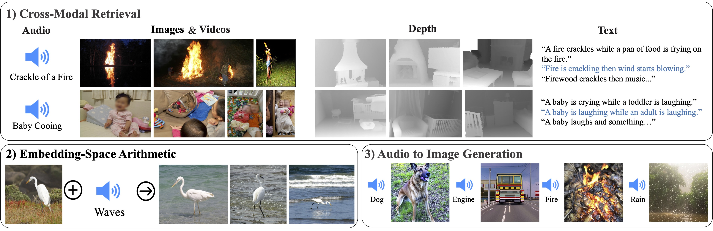
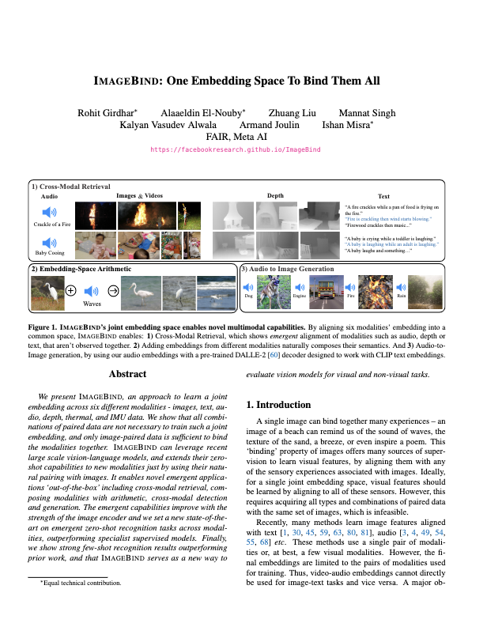

ImageBind: One Embedding Space To Bind Them All
|  |
| We present ImageBind, an approach to learn a joint embedding across six different modalities - images, text, audio, depth, thermal, and IMU data. We show that all combinations of paired data are not necessary to train such a joint embedding, and only image-paired data is sufficient to bind the modalities together. ImageBind can leverage recent large scale vision-language models, and extends their zero-shot capabilities to new modalities just by using their natural pairing with images. It enables novel emergent applications 'out-of-the-box' including cross-modal retrieval, composing modalities with arithmetic, cross-modal detection and generation. The emergent capabilities improve with the strength of the image encoder and we set a new state-of-the-art on emergent zero-shot recognition tasks across modalities, outperforming specialist supervised models. Finally, we show strong few-shot recognition results outperforming prior work, and that ImageBind serves as a new way to evaluate vision models for visual and non-visual tasks. |
People
|
Rohit Girdhar |
Alaaeldin El-Nouby |
Zhuang Liu |
Mannat Singh |
Kalyan Vasudev Alwala |
Armand Joulin |
Ishan Misra |
Paper
|  |
R. Girdhar, A. El-Nouby, Z. Liu, M. Singh, K. V. Alwala, A. Joulin and I. Misra ImageBind: One Embedding Space To Bind Them All IEEE/CVF Conference on Computer Vision and Pattern Recognition (CVPR), 2023 (Highlighted Presentation) [arXiv] [BibTex] |